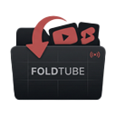

No saved videos yet. Click the extension icon to collect your open YouTube tabs.
Choose how FoldTube looks. “System” follows your OS preference.
Automatically save your open YouTube tabs into FoldTube when closing the browser window.
Link a YouTube Data API v3 key to magically backfill missing channel names and correct video durations for sleeping/auto-collapsed tabs.
Create a localized backup of your Foldtube dashboard or restore an older save state.